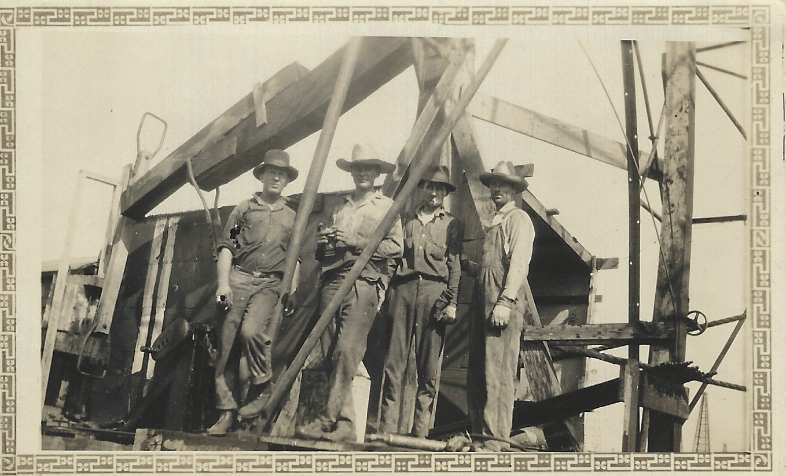

Gerald Wages Toney
Father, Grandfather, WWI Veteran, and Gulf Oil Production Foreman

Gerald Toney, second from left, in the East Texas Oil Field
A timeline of Gerald Toney's life:
- 1898 • born on August 17, 1898, in Texas to Medora Elizabeth Shamburger, age 38, and Benjamin Hamilton Toney, age 46. 17 Aug 1898 • Texas, USA
- 1900 • Justice Precinct 5, Wood, Texas, USA
- 1905 • mother Medora Elizabeth passed away on August 4, 1905, in Hawkins, Texas, at the age of 45.
- 1917 • entered in the military on February 12, 1917, when he was 18 years old.
- 1920 • stationed at Fort McIntosh, Webb, Texas, USA
- 1920 • honorably discharged from military service
- 1921 • began work at Gulf Oil
- 1923 • married Bula "Beulah" Fay Houston in Navarro, Texas, on August 8, 1923, when he was 24 years old.
- 1938 • father Benjamin Hamilton passed away on May 31, 1938, in Hawkins, Texas, at the age of 85.
- 1940 • son Gerald Wages Jr was born on November 12, 1940, in Kilgore, Texas. He was 42.
- 1942 • registered for the World War II draft at the age of 44.
- 1950s • worked as a field supervisor for Gulf Oil over a vast portion of the East Texas field
- 1956 • retired from Gulf Oil after a policy change required all bosses to have a college education
- 1956 • went to work for Rans Jenkins who owned Jenkins Pump & Electric and overhauled pumps until he retired
- 1982 • died on February 21, 1982, in Kilgore, Texas, he was 83 years old.
The measure of who we are is what we do with what we have.
-- Vince Lombardi